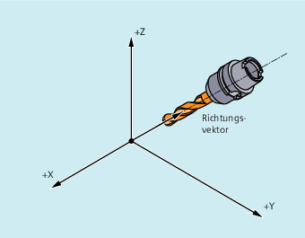
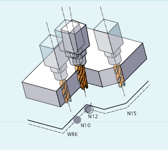

Unter Werkzeugorientierung versteht man die geometrische Ausrichtung des Werkzeugs im Raum. Bei einer 5-Achs-Bearbeitungsmaschine ist die Werkzeugorientierung über Programmbefehle einstellbar.
Mit OSD und OST aktivierte Überschleifbewegungen der Orientierung werden je nach Interpolationsart für die Werkzeugorientierung unterschiedlich gebildet.
Bei aktiver Vektorinterpolation wird der geglättete Orientierungsverlauf auch mittels Vektorinterpolation interpoliert. Dagegen wird bei aktiver Rundachsinterpolation die Orientierung direkt mittels Rundachsbewegungen geglättet.
Programmierung
Programmierung der Orientierungsänderung:
Eine Orientierungsänderung des Werkzeugs kann programmiert werden durch:
direkte Programmierung der Rundachsen
A,B,C(Rundachsinterpolation)Euler- oder RPY-Winkel
Richtungsvektor (Vektorinterpolation durch Angabe von
A3oderB3oderC3)LEAD/TILT(Stirnfräsen)
Das Bezugskoordinatensystem ist entweder das Maschinenkoordinatensystem (ORIMKS) oder das aktuelle Werkstückkoordinatensystem (ORIWKS).
Programmierung der Werkzeugorientierung:
| Orientierung und Bahnbewegung parallel |
| Orientierung und Bahnbewegung nacheinander |
| keine Orientierungsglättung |
| Orientierung konstant |
| Orientierungsglättung nur am Satzanfang |
| Orientierungsglättung am Satzanfang und -ende |
| Geschwindigkeit der Orientierungsänderung bei eingeschalteter Orientierungsglättung in Grad pro mm (gilt für |
| Überschleifen der Orientierung durch Vorgabe der Überschleiflänge mit dem Settingdatum: SD42674 $SC_ORI_SMOOTH_DIST |
| Überschleifen der Orientierung durch Vorgabe der Winkeltoleranz in Grad bei Vektorinterpolation mit dem Settingdatum: SD42676 $SC_ORI_SMOOTH_TOL Bei Rundachsinterpolation wird die vorgegebene Toleranz als maximale Abweichung der Orientierungsachsen angenommen. |
| Hinweis |
Alle Befehle zum Überschleifen der Werkzeugorientierung ( |
Beispiele
Beispiel 1: ORIC
Sind zwischen den Verfahrsätzen N10 und N20 zwei oder mehrere Sätze mit Orientierungsänderungen (z. B. A2=... B2=... C2=...) programmiert und ORIC ist aktiv, so wird der eingefügte Kreissatz entsprechend dem Betrag der Winkeländerungen auf diese Zwischensätze aufgeteilt.
| Programmcode | Kommentar |
|---|---|
| ORIC | |
| N8 A2=… B2=… C2=… | |
| N10 X… Y… Z… | |
| N12 C2=… B2=…N14 C2=… B2=… | ; Der Kreissatz, der an der Außenecke eingefügt wird, verteilt sich auf N12 und N14, entsprechend der Orientierungsänderung. Kreisbewegung und Orientierungsänderung werden hierbei parallel ausgeführt. |
| N20 X =…Y=… Z=… G1 F200 |
Beispiel 2: ORID
Ist ORID aktiv, so werden alle Sätze zwischen den beiden Verfahrsätzen am Ende des ersten Verfahrsatzes ausgeführt. Der Kreissatz mit konstanter Orientierung wird unmittelbar vor dem zweiten Verfahrsatz ausgeführt.

| Programmcode | Kommentar |
|---|---|
| ORID | |
| N8 A2=… B2=… C2=… | |
| N10 X… Y… Z… | |
| N12 A2=… B2=… C2=… | ; Der Satz N12 und N14 wird am Ende von N10 ausgeführt. Danach wird der Kreissatz mit der aktuellen Orientierung ausgefahren. |
| N14 M20 | ; Hilfsfunktionen etc. |
| N20 X… Y… Z… |
| Hinweis |
Für die Art der Orientierungsänderung an einer Außenecke ist der Programmbefehl maßgebend, welcher im ersten Verfahrsatz einer Außenecke aktiv ist. Ohne Orientierungsänderung: Wird die Orientierung an der Satzgrenze nicht verändert, so ist der Werkzeugquerschnitt ein Kreis, der die beiden Konturen berührt. |
Beispiel 3: Änderung der Orientierung an einer Innenecke
| Programmcode | |
|---|---|
| ORIC | |
| N10 X …Y… Z… G1 F500 | |
| N12 X …Y… Z… A2=… B2=… C2=… | |
| N15 X …Y… Z… A2=… B2=… C2=… |